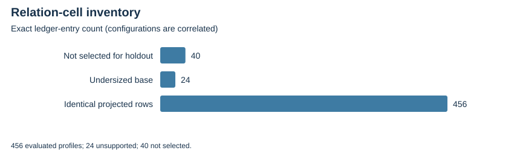

TWIST ROUTES 1–3 · E21 · 2026-10-23 · LOCAL BOUNDED EVIDENCE
The census constructs 120 predicate cells: exhaustive over p=59,211,251 and sampled from 65,536 public x proposals on the other seven fixtures. Independent PARI checks all exact image/fiber tables and sampled witnesses.
The evaluated relation panel has 7296 labeled target/configuration attempts on 154 distinct fixture/point pairs. Every evaluated extension-tuple row set equals the matched same-base rational MITM row set. The diagnostic selector freezes two configurations before labels 16–31; its cost proxy is uncalibrated.
| Relation status | Ledger entries |
|---|---|
| not-evaluated-on-holdout-by-preregistered-selection-rule | 40 |
| unsupported-undersized-projected-base | 24 |
| verified-identical-projected-row-controls | 456 |

The auxiliary polynomial-system solver and complete cold construction/decomposition costs are missing. Final E28 labels 32–63 remain unopened.
Verified locally on the same host; complete raw publication is pending artifact-store access. No calibrated speedup, novelty, independent-host replay or NIST DLP is claimed. Original acceptance criteria remain open.
Rust 1.90.0, PARI/GP 2.17.2, one worker except the three-cell E25 orchestration; isolation L0. Caps and limits are in each source-frozen protocol and receipt. Counts are exact finite records; no wall time is admitted. Stochastic uncertainty is not inferred from repeated configurations or targets.
| Receipt / phase | UTC start | Exit | Source pin |
|---|---|---|---|
| coupled-census-20261023-v1-adjudication.json | 2026-10-23T02:14:12Z | 0 | 2ea22cb8a2d4 |
| coupled-census-20261023-v1-gp.json | 2026-10-23T02:13:49Z | 0 | 2ea22cb8a2d4 |
| coupled-census-20261023-v1.json | 2026-10-23T02:13:30Z | 0 | 2ea22cb8a2d4 |
| coupled-relations-20261023-v1.json | 2026-10-23T02:13:49Z | 0 | 2ea22cb8a2d4 |
Native assessment: ../../execution-v2/assessment-20261023-v3/ASSESSMENT.json. Raw members: runs/coupled-census-20261023-v1 and runs/coupled-relations-20261023-v1. Source/input/binary hashes and exact argv: E21-receipts.json and ../../execution-v2/receipts/.